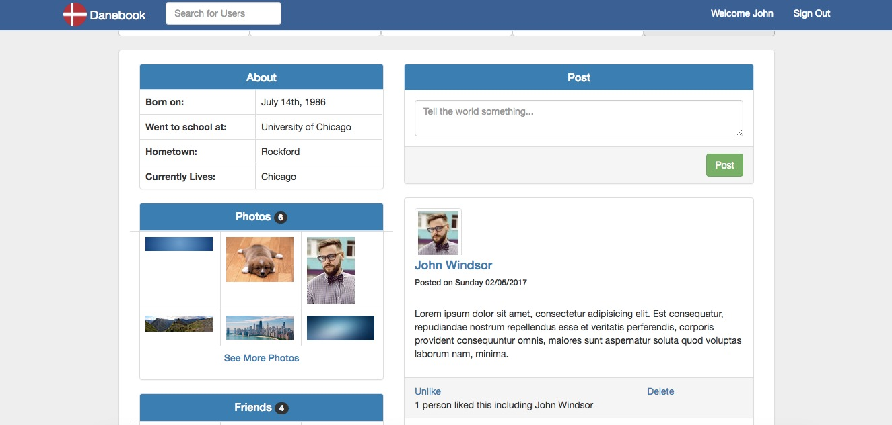
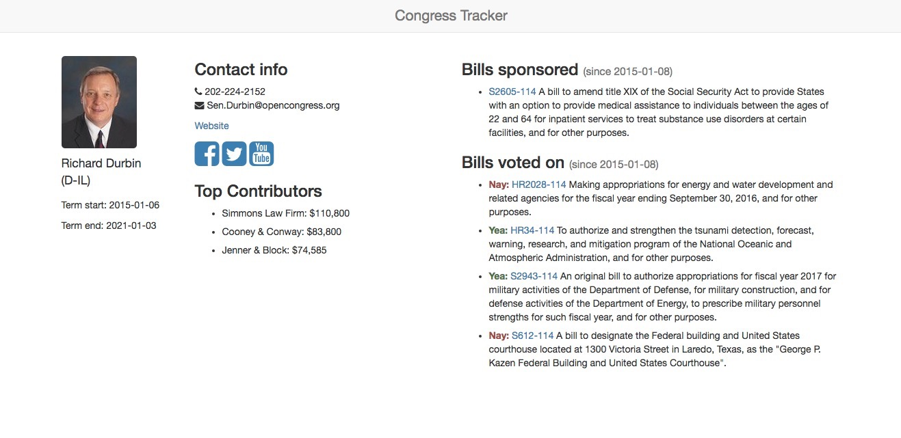
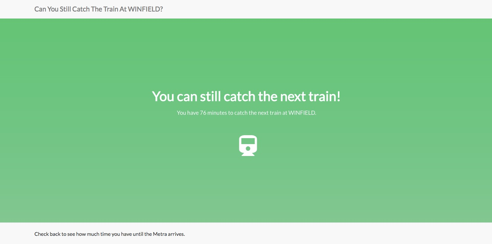

Projects
Danebook
A social network with authentication, posting, commenting, liking and friending. Technologies used: Ruby on Rails, Bootstrap, Paperclip w/ AWS for image upload, Delayed Job, AJAX, Git, and HTML5
Congress App
A RoR-powered app that allows visitors to discover their representatives in Congress, view the bills they recently voted for, and how they voted. Pulls data from the Sunlight API, and uses Google Maps Geolocator API to pinpoint visitor location. Emails configured with SendGrid and Delayed Jobs. Built over the course of a 3-day hackathon with 3 other developers.
Metra Train Tracker
An app that tells you how much time you have to catch the next Metra at your nearest train station. Built with Metra CSV train schedules, freegeoip.net, Google Maps location API, Ruby and Sinatra as part of a 1-day hackathon.
